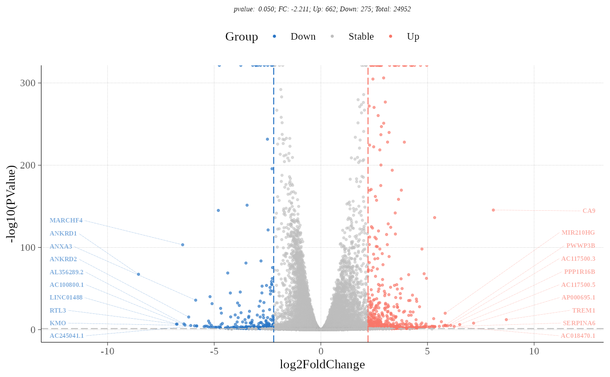

an enhance_colcano function for DEG volcano plot
enhance_volcano( deg_data, x, y, label = c("Down", "Stable", "Up"), label_ns = "Stable", palette = c("#66c2a5", "grey50", "#fc8d62"), cut_FC = "auto", cut_P = 0.05, top = 10, size = 2, expand = c(0.25, 0.25), genes_list = "top", highlight = NULL )
| deg_data | a DEG data frame contains logFC and p value |
|---|---|
| x | which column is log FC |
| y | which column is P value |
| label | symbol word for groups,default is `c("Down","Stable","Up")` |
| label_ns | which group is the stable group |
| palette | color for every label |
| cut_FC | a numeric vector in threshold value of log FC |
| cut_P | threshold value of P value, can set for every cut_FC number in numeric vector format |
| top | a single number or a length of 2 numeric vector, if 2 numeric vector, first one is top max logFC. |
| size | a single number of font size |
| expand | if labels in plot display wrong, try increase it. |
| genes_list | a gene names character vectors; |
| highlight | a gene names character vectors; default NULL |
a ggplot ob
enhance_volcano(DEG_df,x = 'log2FoldChange', y = 'pvalue', label = c("Down","Stable","Up"), label_ns = "Stable", palette = c('#66c2a5', 'grey50', '#fc8d62'), cut_FC = "auto",cut_P = 0.05,top = 10, size = 2.0,expand = c(0.25,0.25), genes_list = "top", highlight = NULL) #> Down 275 #> Stable 24015 #> Up 662 